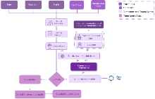

Module 2 research dive · Dialogue
A production router-and-escalation system for real fraud, scam, and dispute triage, banking-scale.
Handoff (escalation) precision and recall both exceed 90%. Click "Results" below for the full table.

The paper's own Figure 1, at reduced size. Open full resolution on arXiv.
Click a piece of the architecture to expand it. Only one stays open at a time.
Click a stat for what it means and where it comes from.
| Model | Synthetic accuracy gain over legacy | 95% CI |
|---|---|---|
| Claude Sonnet 3 | +20.0% | [16.0, 23.8] |
| GPT-4.1-mini | +21.3% | [17.5, 25.9] |
| Gemini-1.5-Pro | +28.4% | [24.8, 31.4] |
| GPT-4.1 | +27.7% | [26.5, 33.2] |
| GPT-5 | +30.6% | [27.1, 33.9] |